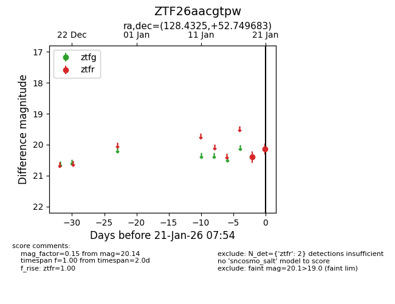
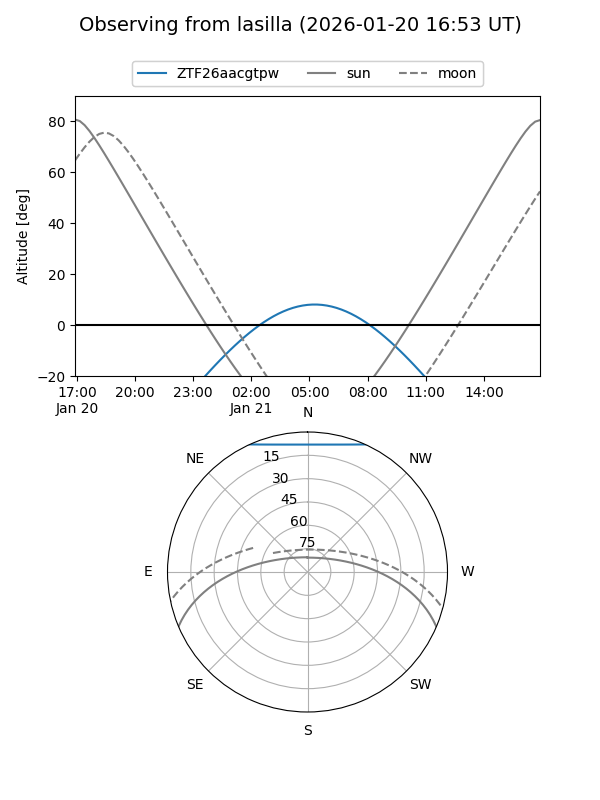
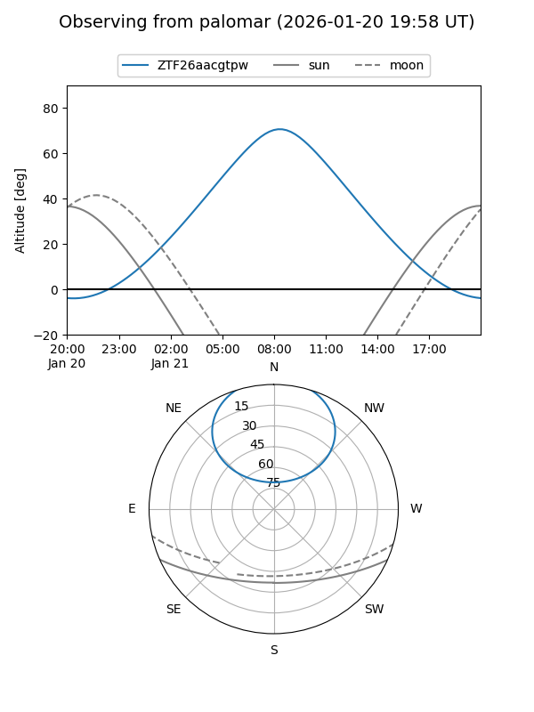

ZTF26aacgtpw
Target ZTF26aacgtpw at 2026-01-21 07:55
Aliases and brokers:
FINK: link
Lasair: link
ALeRCE: link
alt names
ZTF26aacgtpw (ztf,fink_ztf)
Coordinates:
equatorial (ra, dec) = 128.4325,+52.74968
equatorial (HMS+DMS) = 08:33:43.81,+52:44:58.86
galactic (l, b) = (165.7484,+36.54845)
Flags:
Photometry:
last ztfr=20.14
2 ztfr detections
Lightcurve

Visibility


Additional plots